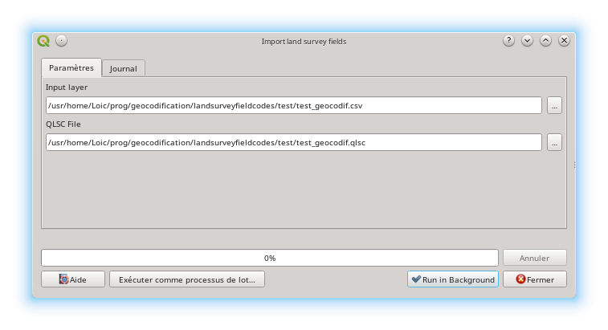

Welcome to Land survey codes import’s documentation!¶
General principle¶
The plugin works according to topography codification principles. The topographic department must first create a codification that will be used by operators in the field. On his field book, when he records a point, the operator will also enter a code. The operator has the possibility to survey several codes for the same point. This codified survey will allow the automatic generation of the drawing, with the possibility of pre-filling attributes that will be processed later. The GIS administrator will be able to link the import with other treatments thanks to the QGIS processing.
The tool proposes to generate the following elements for each type of geometry:
| Type | Point | Line | Polygon | Number of points | Number of parameters | Present |
| Circle by 2 points | X | X | X | 2 | 0 | Yes |
| Circle by 3 points | X | X | X | 3 | 0 | Yes |
| Circle by centre and radius [1] | X | X | X | 1 | 1 | Yes |
| Circle by centre and diameter [1] | X | X | X | 1 | 1 | Yes |
| Square by 2 points | X | X | X | 2 | 0 | No |
| Square by 2 diagnoal points | X | X | X | 2 | 0 | No |
| Rectangle by 2 points and height [1] | X | X | X | 2 | 1 | No |
| Rectangle by 3 points (3rd point = distance from 2nd point) | X | X | X | 3 | 0 | No |
| Rectangle by 3 points (3rd point = orthogonal projection) | X | X | X | 3 | 0 | No |
| Line [2] | X | X | Minimum 2 | 1 | Yes | |
| Point | X | 1 | 0 | Yes |
Explanation of the parameters¶
[1] Means that the code must have a parameter and that it is of a numerical type. Example of the circle by a center and radius. You enter the center of the circle by a point whose code is 100 and you must enter the radius (in the projection unit) by adding the parameter character and the measurement, i.e. 100-1 for a circle with a radius of one meter.
[2] a line is handled in a special way since it needs information indicating the opening and closing of the line, as well as changes of nature (arcs - not yet implemented). Taking as an example, a line with a code of 100, this line has 4 points must be filled in this way:
- 1,…, 100-1
- 2,…, 100-2
- 3,…, 100-2
- 4,…, 100-9
Creation of the codification¶
The codification preparation cannot be done without first having opened a qgis project containing the layers in which the data will be inserted. For the times the layers must be in geopackages. There is no limit to the number of these geopackages. A good practice is to group the layers in thematic geopackages: water, sanitation, roads, etc. If the data is in a postgresql database, it is possible to export them in geopackages via the “Package layers” tool.
By clicking on the icon , the codification configuration window appears.
General parameters¶
The general parameters define the separators used. A separator to indicate the different codes on the same point and a separator to indicate the parameters. These must be adapted according to the capacities of the field book.
Codification¶
“Code” can be alphanumeric, no restriction is imposed, but it must be compatible with your device. It is preferable not to insert spaces or special characters
It is possible to add a comment on the code in the “Description” field.
The “Geometry” is to be chosen from the one indicated above. It is filtered on the geometry of the “Output Layer” from the “GeoPackage” selected below.
Attributes¶
You can automatically generate attributes in the layer columns using the same principles as the QGIS expression calculator. Attention, however, this one does not have vocation to accept complex requests, it is preferable to carry out this stage after the import of the data.
If the exported data from the logbook has additional attributes, it is possible to integrate them by specifying in the expression field’_attN’ where N corresponds to the field number (starting with 1). There is no limitation on attributes as long as the CSV file is compliant.
Special points¶
Error points can be added in a particular layer as well as all points recorded.
Items that do not conform to the coding rule, e.g. code with 3 points and only 2 points, etc., are called error.
Open / Save¶
The File menu allows opening, closing, saving, etc. of the codification.
The codification is saved in a YAML format whose extension is.qlsc
Points import¶
General principle¶
For now, the tool only allows CSV files to be read, so the operator must export his data in CSV format in this order: Point identifier, x coordinate, y coordinate, z coordinate, code, attribute 1, attribute 2,…, attribute N
The tool will separate the codes that are on the same point, and then match them according to their code. For example a csv like:
‘2’, ‘1980244.900’, ‘5190520.938’, ‘1002.461’, ‘300+200’
‘3’, ‘1980249.438’, ‘5190515.953’, ‘1002.329’, ‘101’
‘1’, ‘1980242.941’, ‘5190519.460’, ‘1002.521’, ‘200+300’
will be transformed into:
‘2’, ‘1980244.900’, ‘5190520.938’, ‘1002.461’, ‘300’
‘2’, ‘1980244.900’, ‘5190520.938’, ‘1002.461’, ‘200’
‘3’, ‘1980249.438’, ‘5190515.953’, ‘1002.329’, ‘101’
‘1’, ‘1980242.941’, ‘5190519.460’, ‘1002.521’, ‘200’
‘1’, ‘1980242.941’, ‘5190519.460’, ‘1002.521’, ‘300’
and then:
‘3’, ‘1980249.438’, ‘5190515.953’, ‘1002.329’, ‘101’
‘2’, ‘1980244.900’, ‘5190520.938’, ‘1002.461’, ‘200’
‘1’, ‘1980242.941’, ‘5190519.460’, ‘1002.521’, ‘200’
‘2’, ‘1980244.900’, ‘5190520.938’, ‘1002.461’, ‘300’
‘1’, ‘1980242.941’, ‘5190519.460’, ‘1002.521’, ‘300’
The tool will process the codes in queue, special attention is requested to the operator entering the codes because an input error will delay the coding and the resulting drawing.
Processing import¶

The import is done via a new module in the processing.
The tool asks for the configuration file (.qlsc file) and the points file (.csv)

Result¶
At the end of the import, you have to refresh the canvas to see the drawing. The data is obviously displayed with the style determined in the project.